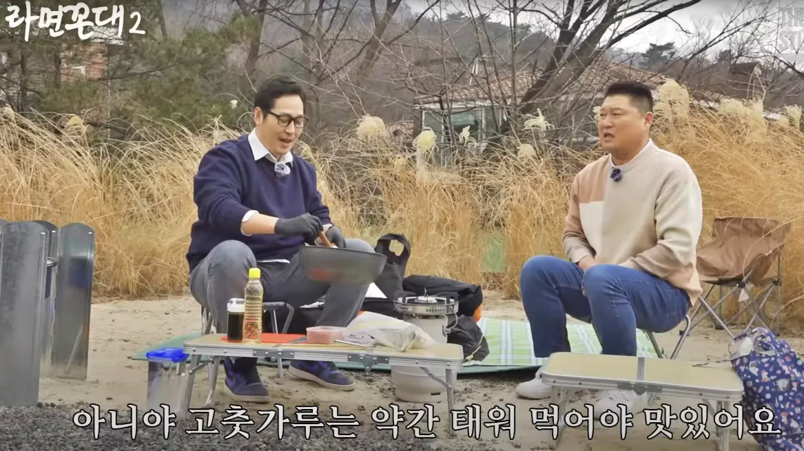

김풍 실제체급 체감 확 오는 사진
댓글
강호동 실물보면 상체에 비해 하체가 부실하다는 느낌 받음. 그냥 역삼각형이 움직이는 느낌인데 가까이 오면 떡대가 어?
강호동 종아리 하트부터 다리 무슨 통나무 수준인데 상체가 너무 미쳐서 그런거아님..?
괜히 음바코가 아님ㅋㅋㅋ

강호동 실물보면 상체에 비해 하체가 부실하다는 느낌 받음. 그냥 역삼각형이 움직이는 느낌인데 가까이 오면 떡대가 어?
강호동 종아리 하트부터 다리 무슨 통나무 수준인데 상체가 너무 미쳐서 그런거아님..?
괜히 음바코가 아님ㅋㅋㅋ
와 음탕주머니보소